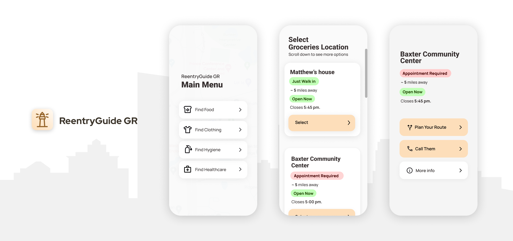
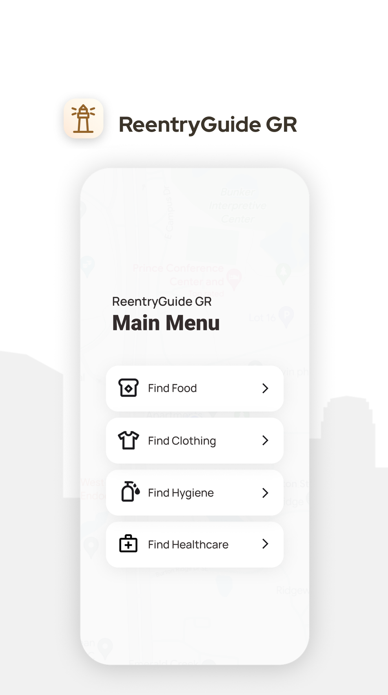

Technology
React Native, Docusaurus, Figma, Inkscape, Krita
Service
Software Development, UX Design, User Research, User Testing, Deployment, Web Design, Graphic Design, Logo Design, Digital Illustration
"ReentryGuide GR" is a mobile application developed in collaboration with Reentry Reimagined, designed specifically to support the reintegration of former prisoners into society within the Grand Rapids area.
Impact: The app's posters displayed in Michigan Department of Corrections (MDOC) parole office in Grand Rapids, helping individuals access essential resources during reentry.